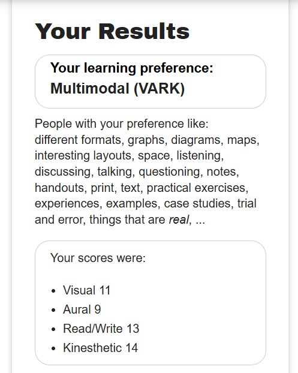

After taking the learning style quiz on Vark I learned that I have a multimodal learning style. These results did not surprise me in the least. Depending on what I am trying to learn will determine the way I go about learning it. Additionally, I use several methods to learn something to ensure I am confident in the material. For example, I learned HTML and CSS in a class I took last semester. In addition to the material that the professor provided, I used W3Schools extensively. I would read the lesson, watch the videos, and try the examples. I could then experiment with the code on my own using Notepad++.

Time management is something that I am already pretty good at. I keep a datebook to keep track of all my meetings, classes, assignment due dates, etc. I also have a wall calendar that I use for quick reference of my obligations. I assign myself priority tasks that need to be accomplished each day. I have alarms/reminders that are set throughout the day to keep me on schedule.
| Time | Task | Activity Description | Learning Style | Tools/Resources |
|---|---|---|---|---|
| 8:00-9:00 | Prep | Review course assignments | Visual | Canvas |
| 9:00-11:00 | Reading | Learn weekly material | Multimodal | Canvas, notebook, online learning resources | 11:00-12:00 | Homework | Complete Homework for course | Reading/Writing, Kinesthetic | Canvas |
| 12:00-1:00 | Break | Eat lunch | Kinesthetic | Kitchen |
| 1:00-2:00 | Review and Study | Review and study all material for quizzes and tests | Reading/Writing, Auditory,Visual | Canvas, notes, online resources |
| 2:00-3:00 | Break | Go for a walk | Kinesthetic | Outdoors |
| 3:00-4:00 | Quick Recap | Do a quick overview of the material | Visual | Canvas, notes |
| 4:00-5:00 | Quiz/Test | Take the quiz or test in a quiet space | Reading/Writing | Canvas |
Admin. (2025, April 29). Why Time Management Matters: How to Increase your Productivity. WVJC.
Bay Atlantic University. (2025, July 15). 8 Types of Learning Styles | The Definitive guide. Bay Atlantic University - Washington, D.C.
UGA College of Agricultural and Environmental Sciences. (2025, August 14). Time management: 10 Strategies for Better Time Management. University of Georgia.